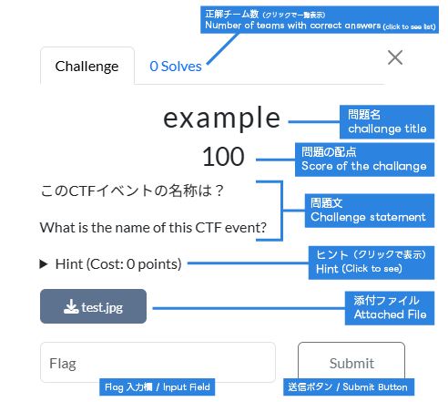

Flag（解答） の提出方法について [日本語 / JAPANESE]
Flag とは
CTFにおける「答え」のことです。CTFに初めて参加する方は、最後までこのページをお読みください。
Flag の送信方法
各問題ごとの下部にある Flag の入力欄に入力して送信してください。
通常の Flag について
SWIMMER OSINT CTF における Flag は、特に記載がない限りすべて SWIMMER{xxxxxxx} のような形式となります。
たとえば、問題の答えが VXX7+396 だと思った時は、SWIMMER{VXX7+396} という文字列を送信してください。英数字 SWIMMER および波括弧 { } 部分は 半角 です。また、SWIMMER は大文字です。
Flag 内には、スペースやハイフン、アンダーバーなどを含むことができます。そのため、Flag は以下のような形になることがあります。
SWIMMER{Gare du Champ de Mars - Tour Eiffel}SWIMMER{2025年日本国際博覧会}SWIMMER{청와대}SWIMMER{Emirates_UAE_EK}
すべての問題にFlag形式の見本が記されているので、問題ごとの指示に従ってください。
Flag形式のチェックについて
SWIMMER{ } 部分の誤入力を防ぐため、正誤判定を行う前に、まずはFlag形式を自動でチェックします。
Flag format does not match the required pattern と表示されたときは、形式が一致していません。
この場合、形式を修正してから再度送信すると、正誤判定が行われます。

座標（緯度経度）の Flag について
座標（緯度経度）が Flag となる問題では、マップ上でピンを立てたのち、送信ボタンを押すことで Flag を送信できます。マップ内の虫眼鏡アイコンから、座標や地名を検索することも可能です。

解答欄における青い円は正解における許容誤差を示します。
例えば、ある問題の正解が以下のような緑の点線の範囲で設定されていたとします。
このとき、正解は下図のようになります。つまり、解答は青い円の範囲ではなく、ピンの位置で判断します。

なお、本機能についてはDegun 氏が開発した geo_challenges プラグインをカスタマイズして利用しています。
不正解によるペナルティについて
すべての問題は、ブルートフォース（総当たり）を防ぐため、連続不正解によるペナルティが設定されています。誤った提出を行うたびに、その問題は 15 分間再提出ができなくなります。 ペナルティに関わる誤答は個人単位ではなく、チーム単位でカウントされることに注意してください。
ただし、最初の 3 回まではペナルティが適用されません。
12:00 1回目の提出: 誤答 (引き続き送信可能)
12:01 2回目の提出: 誤答 (引き続き送信可能)
12:02 3回目の提出: 誤答 (引き続き送信可能)
12:03 4回目の提出: 誤答 (ペナルティ適用: ここから15分間はこの問題への再提出不可)
12:18 5回目の提出: 正答
試行回数制限について
問題によっては、解答を試行する回数に制限があります。
たとえば問題文の下に 1/5 attempts と表示されていた場合、その問題は 5 回までの試行回数制限があり、あなたのチームはそれをすでに 1 回使っているという状況を示しています。
この場合、5 回すべてを使い果たすと、その問題に解答することはできなくなります。

また、試行回数制限は個人単位ではなく、チーム単位 でカウントされることに注意してください。
13:00 1回目の提出: 誤答 (引き続き送信可能)
14:00 2回目の提出: 誤答 (引き続き送信可能)
15:00 3回目の提出: 誤答 (引き続き送信可能)
16:00 4回目の提出: 誤答 (引き続き送信可能)
17:00 5回目の提出: 誤答 (最後の提出)
18:00 6回目の提出: 受理されない (試行回数制限により、この問題にはこれ以上送信できない)なお、試行回数制限と不正解によるペナルティは同時に適用されます。試行回数制限がある問題において、ペナルティによって Flag の送信ができなかった場合、解答可能な回数は減りません。
しかし、CTFシステムの仕様上、Web ページ上では回数が 1 回減ったような表示になってしまいます（システム内では実際には減っていません）。そのため、誤答してしまった問題に再挑戦するときは Flagを送信する前にページを再読み込みするか、問題を開き直す ことをおすすめします。
12:01 1回目の提出: 誤答 (引き続き送信可能)
12:02 2回目の提出: 誤答 (引き続き送信可能)
12:03 3回目の提出: 誤答 (引き続き送信可能)
12:04 4回目の提出: 誤答 (以降15分間、不正解ペナルティによりこの問題にはフラグを送信できない)
12:05 5回目の提出の試み: 受理されない (システムの仕様上、回答可能回数が一時的に 0 回と表示される)
12:19 5回目の提出: 誤答 (最後の提出)
12:20以降 6回目の提出: 受理されない (試行回数制限により、この問題にはこれ以上送信できない)この時、下記のようなエラーメッセージが表示されます。この画像は、ユーザーが 3 回不正解した後、4 回目の送信を行った時のものです。4 回目はペナルティによって送信できなかったため、回答可能な回数は減りません。しかし、Web ページ上では回数が減ったような表示（4/10 attempts）になってしまっています。

入力ミスについて
上記の通り、ペナルティがあるため、入力ミスには気をつけてください。 例えば、 SWIM{xxxxx}や{xxxxx}、といったFlag形式の入力ミスがあった場合、これは答え部分が正しくても誤答として判定されます。
特に、解答回数に制限がある問題では気をつけてください。平等性のため、原則として救済措置はありません。
【重要】日本語など、英語以外の入力環境について
CTFシステムの仕様上、解答欄で日本語の変換を行うと、Enter キーの操作によって、入力途中でも送信判定されてしまい不正解になる ことがあります。
解答回数の制限を使い果たさないため、メモ帳などで Flag 形式を整えた上でコピー・アンド・ペーストして解答することを強く推奨します。
こちらも原則として救済措置はありません。
表記ゆれについて
運営者は、作問時に表記ゆれや別の表記を想定して複数の解を設定しています。
たとえば、答えが「羽田空港」になる問題があったとしましょう。もし、その問題において「東京国際空港」「HND」「RJTT」という解答も正しいと想定されるなら、これらをいずれも正解として設定しています。
ただし、問題文に「IATA空港コードで答えよ」と記載されていた場合、「HND」のみが正解として設定されているでしょう。
問題文の設定には万全を期していますが、万が一「この表記は正解ではないのか」と疑わしい問題があった場合、#ask-for-admin チャンネルから問い合わせを行ってください。
About Flag Submission [英語 / ENGLISH]
A "Flag" is the "answer" in CTF. Flags are submitted through the input field below each challenge to determine if your answer is correct or incorrect. If this is your first time participating in a CTF, please read this page to the end.
Usual Flags
In the SWIMMER OSINT CTF, unless otherwise specified, all flags are in the format SWIMMER{xxxxxxx}. For example, if you think the answer is VXX7+396, submit the string SWIMMER{VXX7+396}. The alphanumeric characters SWIMMER and the braces { } are ASCII characters. Also, SWIMMER must be uppercase.
Flags can contain spaces, hyphens, underscores, Japanese characters, and more. Therefore, flags may look like the following:
SWIMMER{Gare du Champ de Mars - Tour Eiffel}SWIMMER{2025年日本国際博覧会}SWIMMER{청와대}SWIMMER{Emirates_UAE_EK}
Each challenge includes a flag format example, so please follow the instructions for each challenge.
Flag Validation
To prevent typos in the SWIMMER{ } part of the flag, the system automatically checks the flag format before judging whether your submission is correct or incorrect. If you see Flag format does not match the required pattern, your input does not match the required format. In that case, fix the format and submit again; the correctness check will then be performed.
Coordinate Flags
For challenges where the coordinates (latitude and longitude) are the flag, you can submit the flag by placing a pin on the map and then pressing the Submit button. You can also search for coordinates and place names using the magnifying glass icon in the map.
The blue circle in the answer field indicates the tolerance for the correct answer. For example, suppose the correct answer to a challenge is set within a range indicated by a green dotted line as shown below. In this case, the correct answer would be as shown in the diagram. In other words, the answer is determined by the position of the pin, not by the range of the blue circle.
Note that this feature is based on a customization of the geo_challenges plugin developed by Degun.
Penalty for Incorrect Answers
All challenges have penalties for consecutive incorrect answers to prevent brute-force attacks. Each time you submit an incorrect answer, you will be unable to resubmit to that challenge for 15 minutes. Note that incorrect answers related to penalties are counted per team, not per individual.
However, penalties do not apply for the first 3 attempts.
12:00 1st submission: Wrong answer (can continue submitting)
12:01 2nd submission: Wrong answer (can continue submitting)
12:02 3rd submission: Wrong answer (can continue submitting)
12:03 4th submission: Wrong answer (Penalty applied: cannot resubmit to this challenge for the next 15 minutes)
12:18 5th submission: Correct answerAttempt Limits
Some challenges have a limit on the number of attempts to solve them. For example, if you see 1/5 attempts below the challenge text, this indicates that the challenge has a limit of 5 attempts and your team has already used 1 of them. In this case, once all 5 attempts are used, you will no longer be able to answer the challenge.
Also note that attempt limits are counted per team, not per individual.
13:00 1st submission: Wrong answer (can continue submitting)
14:00 2nd submission: Wrong answer (can continue submitting)
15:00 3rd submission: Wrong answer (can continue submitting)
16:00 4th submission: Wrong answer (can continue submitting)
17:00 5th submission: Wrong answer (last submission)
18:00 6th submission: Not accepted (cannot submit to this challenge anymore due to attempt limit)Note that attempt limits and penalties for incorrect answers are applied simultaneously. For challenges with attempt limits, if a flag submission fails due to a penalty, the number of available attempts does not decrease.
However, due to CTF system specifications, the web page may display as if the count has decreased by 1 (though it hasn't actually decreased in the system). Therefore, when retrying a challenge you answered incorrectly, it is recommended to reload the page or reopen the challenge before submitting a flag.
12:01 1st submission: Wrong answer (can continue submitting)
12:02 2nd submission: Wrong answer (can continue submitting)
12:03 3rd submission: Wrong answer (can continue submitting)
12:04 4th submission: Wrong answer (cannot submit flags to this challenge for the next 15 minutes due to incorrect answer penalty)
12:05 5th submission attempt: Not accepted (due to system specifications, the number of available attempts is temporarily displayed as 0)
12:19 5th submission: Wrong answer (last submission)
12:20 onwards 6th submission: Not accepted (cannot submit to this challenge anymore due to attempt limit)At this time, an error message like the one below will be displayed. This image shows what happens when a user submits a 4th attempt after 3 incorrect answers. Since the 4th attempt could not be submitted due to the penalty, the number of available attempts does not decrease. However, the web page displays as if the count has decreased (4/10 attempts).
About Input Mistakes
As mentioned above, due to penalties, please be careful of input mistakes. For example, if there is a flag format typo such as SWIM{xxxxx} or {xxxxx}, this will be judged as incorrect even if the answer portion is correct. Be particularly careful with challenges that have a limited number of attempts. As a rule, there are no relief measures for the sake of fairness.
[Important] Non-English Input Environments (such as Japanese IME)
Due to CTF system specifications, if you convert Japanese or other languages in the answer field, pressing the Enter key may result in submission judgment even if you are in the middle of typing, resulting in an incorrect answer. To avoid exhausting the attempt limit, it is strongly recommended to prepare the flag format in a text editor or similar and then copy and paste it as your answer. As a rule, there are no relief measures for this as well.
About Notation Variations
Organizers set multiple acceptable answers anticipating notation variations and alternative notations when creating challenges.
For example, suppose there is a challenge where the answer is "Haneda Airport". If "Tokyo International Airport", "HND", and "RJTT" are also considered correct answers for that challenge, all of these are set as correct answers. However, if the challenge text states "Answer with the IATA airport code", only "HND" would be set as the correct answer.
We make every effort to properly configure challenges, but if you encounter a challenge where you suspect "isn't this notation correct?", please inquire through the #ask-for-admin channel.